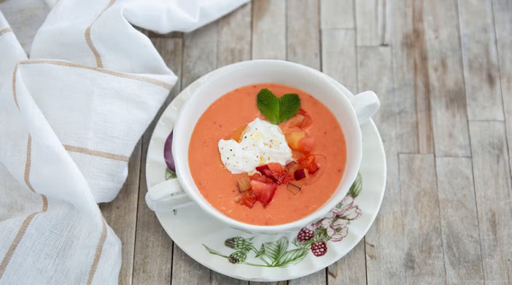

- 1 kg de tomates maduros
- 1 pepino
- 1 pimiento verde
- 1 diente de ajo
- 50 g de pan duro
- 50 ml de aceite de oliva virgen extra
- 30 ml de vinagre de vino
- Sal al gusto
- Agua fría (según textura deseada)
Preparación paso a paso
- Lava bien los tomates, el pepino y el pimiento verde.
- Pela el pepino y el diente de ajo.
- Trocéa todas las verduras y colócalas en el vaso de la batidora junto con el pan, el aceite, el vinagre y la sal.
- Tritura hasta obtener una mezcla homogénea.
- Agrega un poco de agua fría si deseas una textura más ligera.
- Pasa el gazpacho por un colador fino para eliminar pieles y semillas.
- Refrigera al menos una hora antes de servir.
- Sírvelo bien frío, acompañado de picatostes o trocitos de verdura si lo deseas.

Gazpacho andaluz con textura perfecta
Descargar receta en PDF